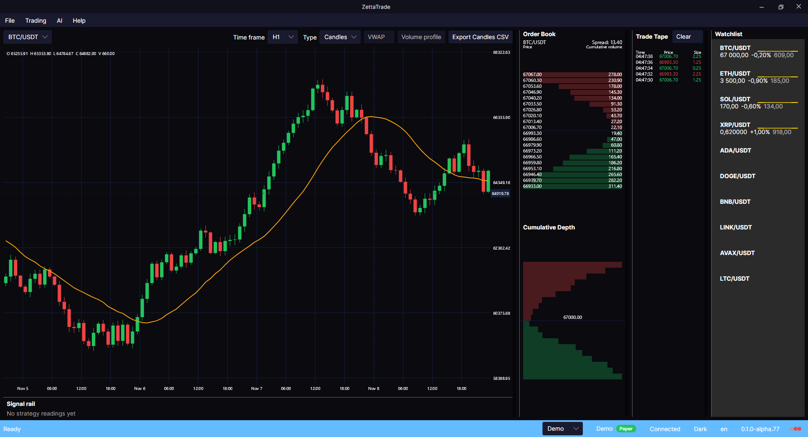

Торговый терминал, который живёт на вашей машине.
ZettaTrade — кроссплатформенный десктопный терминал для крипторынка: сегодня потоки с Binance и Bybit, свечи и стакан рендерятся на SkiaSharp, платформы — Windows, macOS и Linux. Он построен вокруг ИИ: встроенный Model Context Protocol-сервер и клиент плюс локальная модель отвечают с учётом живого контекста вашего экрана — облако опционально. И он локальный по устройству: журнал — SQLite на вашем диске, логи — файлы, секреты — системный keystore, и ничто не уходит наружу.

Что уже реализовано
Карточку здесь получает только функция, которая существует на текущем дереве — то же правило, что и в документации: никаких «скоро в хиро», каждое утверждение ниже прослеживается до готовой строки на доске.
Графики
Свечной график с зумом, панорамой и перекрестьем с OHLC-сводкой; оверлеи VWAP и профиля объёма; SMA, EMA, WMA, RSI, MACD, Bollinger и ATR идут как встроенные плагины-индикаторы.
Стакан ордеров
Живая лестница из публичного потока площадки рядом с кумулятивной глубиной. Клик по уровню открывает предзаполненный тикет ордера; сделки струятся в ленту.
Портфель
Панели балансов и позиций, журнал ордеров с сохранением (SQLite через EF Core) и PnL-движок: реализованный и нереализованный учёт, винрейт, профит-фактор и кривая капитала — всё считается по локальному журналу.
Алерты
Ценовые и процентные алерты с менеджером: следят за потоком, срабатывают в тосты и оседают в истории уведомлений, которую можно листать.
ИИ-ассистент
Один переключатель согласия передаёт локальной модели Ollama ограниченный по токенам снимок живого рабочего пространства. Встроенный MCP-сервер (Zetta) и MCP-клиент дают инструменты через тот же paper-канал и те же проверяющие ворота.
Скачать
Альфа-сборки распространяются как самодостаточные архивы под каждую ОС, прицепленные к GitHub Releases: win-x64, osx-x64 и osx-arm64 как zip, linux-x64 как tar.gz — рядом лежит файл с суммами SHA-256 (zettatrade-<version>-sha256.txt). Процесс поставки собирает и прицепляет эти артефакты автоматически на каждом версионном теге — внутри артефакта только приложение и больше ничего: ни пользовательских данных, ни ключей.
- win-x64 · zip → GitHub Releases
- osx-x64 · zip → GitHub Releases
- osx-arm64 · zip → GitHub Releases
- linux-x64 · tar.gz → GitHub Releases
- суммы SHA-256 · txt → GitHub Releases
Последний релиз: пока ни одного тега — до первого версионного тега ссылки выше указывают на страницу Releases; как только он появится, деплой проштампует их прямо на соответствующие архивы.
Страница Releases — единственная дверь загрузки, которую этот проект признаёт. Пока ничего не подписано (подписание появится в бете, по странице безопасности): сверяйте суммы SHA-256.
Локальный и осторожный по умолчанию
Локальность — это архитектура, а не приватный маркетинг: конфигурация, журнал SQLite, файловые логи и хранилище секретов (DPAPI на Windows, Keychain на macOS, Secret Service на Linux, с резервом в виде создаваемого приложением зашифрованного файла) живут на вашей машине. Телеметрии нет, и единственное, что разрешено на stdout — сам протокол MCP.
В поставке идёт только paper-движок: симулятор сделок по живым рыночным ценам, демо-баланс в памяти и никогда — реальные деньги или биржевые ключи. Каждый ордер перед исполнением проходит проверку рисков, а всё, что помечено как высокорисковое, требует явного подтверждения человека — включая ордера, которые ИИ-агент выставляет через инструменты MCP. Реальные площадки доступны в режиме testnet изменением конфигурации, и чип канала в статус-баре (Paper · Testnet · Live) делает канал очевидным с первого взгляда; сам цикл торговли на тестнете — строка queued на доске, так что ничего подобного на этой странице не заявлено.
- Раскрытие уязвимостей и политика безопасности репозитория → docs/SECURITY.md
- Заметки о paper-торговле против «живой» торговли → руководство, § 5 «Paper vs live: safety notes»
- Непреложные правила торговой безопасности (ключи, сначала testnet, секреты) → README, раздел «Trading safety»
- Программное обеспечение в познавательных целях, не инвестсовет → полный дисклеймер
Дорожная карта — это доска задач
Всё, что вы прочитали на этой странице, отслеживается на открытой доске: внедрённое — строки done, запланированное — строки queued, и queued означает queued — хиро выше не называет ничего, что ещё не реализовано. Смотрите на доску, чтобы знать, что приземлится следующим.
Попробуйте альфу
Запустите, поломайте, расскажите — альфа-программа работает: скачайте альфа-сборку, сообщите о проблеме через шаблоны issue и следите, как каждый отчёт проходит публичный триаж до строки на доске. Страница метрик показывает только числа, которые любой может перепроверить по открытым данным GitHub; само приложение остаётся локальным и без телеметрии.